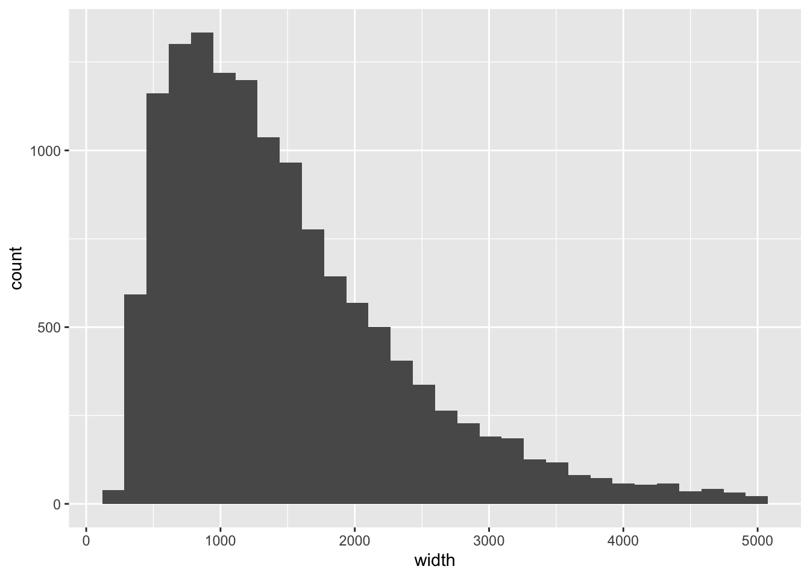
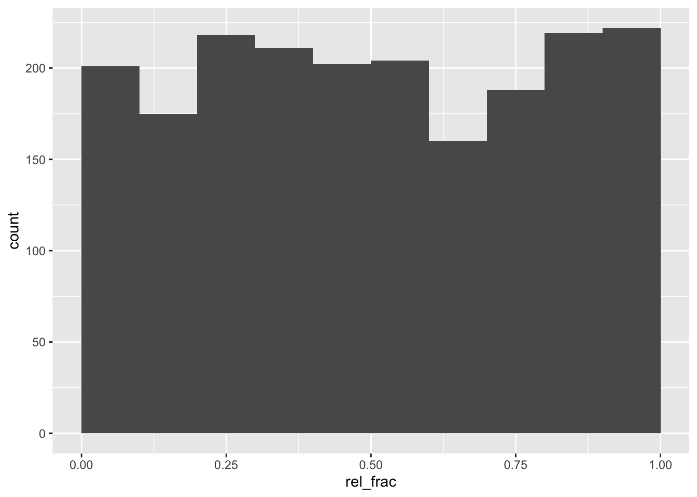
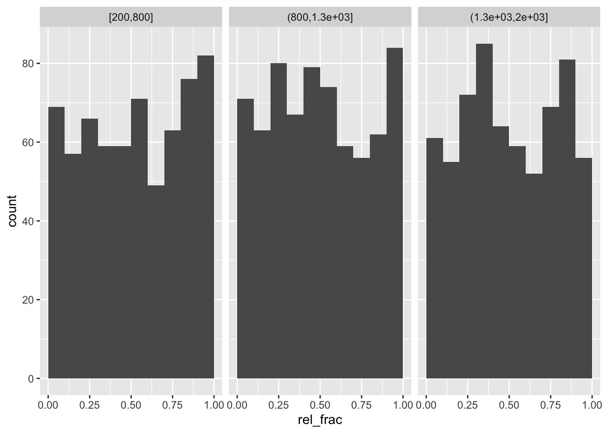

library(AnnotationHub)
ah <- AnnotationHub()
kidney_pks <- ah[["AH43443"]]5 SNP position in peaks
Objective: determine the position of a set of SNPs in peaks, that is, determine the relative positions of those SNPs that overlap the peaks.
We again will use the ENCODE kidney H3K27ac ChIP-seq peaks used in the previous analysis (Dunham et al. 2012). We will create some artificial SNPs: this analysis could generalize to any time that we have two ranges, where we are interested in the relative position of one set of ranges (SNPs) within the other set of ranges (peaks).
We will filter the peaks to standard chromosomes, and include the same cutoffs we used in the previous analysis.
suppressPackageStartupMessages(library(GenomeInfoDb))
pks <- kidney_pks
pks <- keepStandardChromosomes(pks)Loading required namespace: GenomicRangessuppressPackageStartupMessages({
library(dplyr)
library(tibble)
library(plyranges)
})
q_thr <- 3
s_thr <- 9
pks <- pks %>%
filter(qValue > q_thr & signalValue > s_thr) %>%
sort()A histogram of peak width:
library(ggplot2)
pks %>% as_tibble %>%
filter(width < 5000) %>%
ggplot(aes(width)) +
geom_histogram()`stat_bin()` using `bins = 30`. Pick better value `binwidth`.
Let’s subset to peaks that are less than 2000 in width:
pks <- pks %>% filter(width < 2000)Now, we may be interested in SNPs that are associated with regulatory function. While we could find these from a database of chromatin QTL or functionally validated variants, here we will just create a simulated set of SNPs for demonstration.
set.seed(1)
snps <- pks %>%
slice(sample.int(n(), 2000)) %>%
anchor_5p() %>%
mutate(start=start + floor(runif(n(),0,width))) %>%
mutate(width=1)
snpsGRanges object with 2000 ranges and 6 metadata columns:
seqnames ranges strand | name score signalValue
<Rle> <IRanges> <Rle> | <character> <numeric> <numeric>
[1] chr1 222886667 * | Rank_786 943 28.06788
[2] chr17 1251302 * | Rank_11154 238 10.45065
[3] chr9 75179753 * | Rank_8060 305 12.52016
[4] chrX 70401571 * | Rank_9602 266 11.38197
[5] chr20 37615472 * | Rank_14922 190 9.52741
... ... ... ... . ... ... ...
[1996] chr9 14316343 * | Rank_15136 188 9.11715
[1997] chr18 74800298 * | Rank_15685 181 9.02626
[1998] chr19 52641902 * | Rank_2464 606 19.64891
[1999] chr2 128642862 * | Rank_15514 184 9.18719
[2000] chr6 151005236 * | Rank_13672 203 9.07738
pValue qValue peak
<numeric> <numeric> <numeric>
[1] 94.3437 89.9679 267
[2] 23.8843 21.0424 458
[3] 30.5751 27.5376 616
[4] 26.6991 23.7679 455
[5] 19.0203 16.3297 414
... ... ... ...
[1996] 18.8452 16.1647 461
[1997] 18.1808 15.5192 173
[1998] 60.6790 56.9445 1281
[1999] 18.4512 15.7837 125
[2000] 20.3511 17.6170 887
-------
seqinfo: 25 sequences (1 circular) from hg19 genomeThese should all overlap peaks:
snps %>%
mutate(n_overlaps = count_overlaps(., pks)) %>%
summarize(tab=table(n_overlaps))DataFrame with 1 row and 2 columns
tab.n_overlaps tab.Freq
<factor> <integer>
1 1 2000We now have a bit of a hack for this analysis: we add the start position and width of the peak as addition columns of metadata. This is because otherwise, we will lose the start position when we perform the overlap of SNPs in peaks, and we need it for later.
pks_trim <- pks %>%
select(name) %>%
mutate(peak_start=start, peak_width=width)We can then obtain overlaps of SNPs with peaks, and add the relative position of the SNP within the peak extent. We use 1-based indexing, such that if the SNP is the same as the leftmost basepair of the peak, it gets counted as position 1.
o <- snps %>%
join_overlap_inner(pks_trim) %>%
mutate(rel_pos = start - peak_start + 1,
rel_frac = (rel_pos - 1) / (peak_width - 1 ))Check our expectations about these new columns:
all(o$rel_pos >= 1)[1] TRUEall(o$rel_frac >= 0)[1] TRUEall(o$rel_frac <= 1)[1] TRUEFinally, we can compute a histogram of where the SNPs fall in the peaks:
o %>%
as_tibble() %>%
ggplot(aes(rel_frac)) +
geom_histogram(breaks=0:10/10)
Now stratifying by width of peak:
quantile(o$peak_width, 0:3/3) 0% 33.33333% 66.66667% 100%
246.0000 813.3333 1289.6667 1998.0000 o %>%
mutate(width_bin = cut(peak_width,
breaks=c(200,800,1300,2000),
include.lowest=TRUE)) %>%
as_tibble() %>%
ggplot(aes(rel_frac)) +
geom_histogram(breaks=0:10/10) +
facet_wrap(~width_bin)